課後複習首頁第 1 週｜教育心理學概論
教育心理學是什麼？從學科發展到研究方法
「教育心理學概論」是本課程的第一個主題，涵蓋四個部分：教育心理學的定義與範疇、學科的六個發展時期、優質教學的幾個概念，以及教育心理學研究。本週以三個常見的教學迷思說明教育心理學研究的必要性，並介紹實驗法、個案實驗與相關法；研究方法與後續各單元的理解密切相關，是本週的重點。
教育心理學的範疇
班級經營、教學方法、學習動機、師生互動與個別差異，都屬於教育心理學關注的議題。整體而言，教育心理學可分為五大範疇：
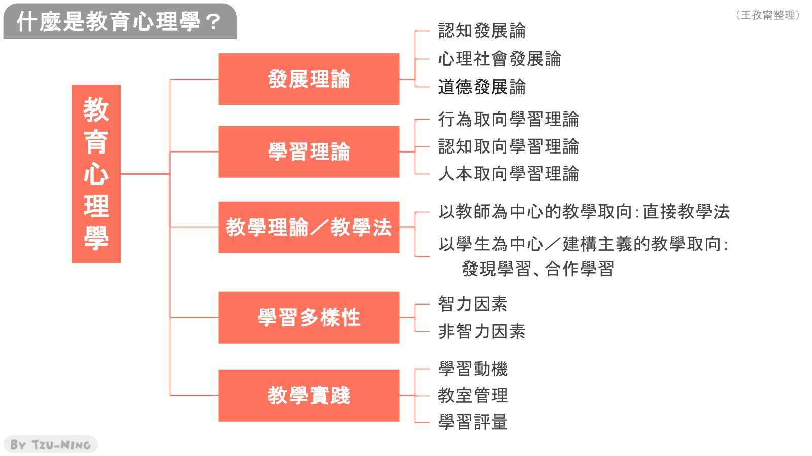
- 發展理論：認知發展、心理社會發展與道德發展。
- 學習理論：行為取向、認知取向與人本取向的學習理論。
- 教學理論／教學法：以教師為中心的直接教學法，以及以學生為中心的發現學習、合作學習等建構主義取向教學。
- 學習多樣性：學生的個別差異，包括智力因素與非智力因素。
- 教學實踐：學習動機、教室管理與學習評量。
由於教育心理學涵蓋範圍廣泛，各範疇皆可獨立成為一門課程。本學期的內容進行至學習動機；教室管理（班級經營）與學習評量另有專門課程，本課程僅作簡要介紹。
教育心理學的發展：六個時期
教育心理學的發展可分為六個時期。理解這段歷史的關鍵在於：每一個時期的主張，都是在回應前一個時期的不足。
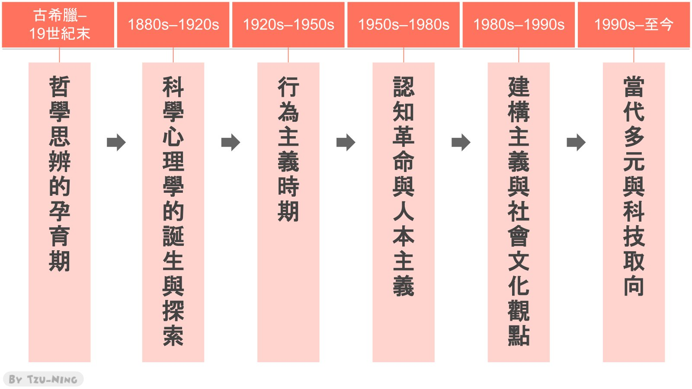
哲學思辨的孕育期（古希臘至 19 世紀末）
此時心理學尚未成為獨立學科，教育相關的思考屬於哲學範疇。代表人物包括柏拉圖、亞里斯多德，以及後期的洛克與盧梭。
這個時期討論的核心問題是：知識來自先天或後天？教育的目的是啟發心靈，還是順應天性？其限制在於缺乏科學方法，各家理論無法加以驗證。
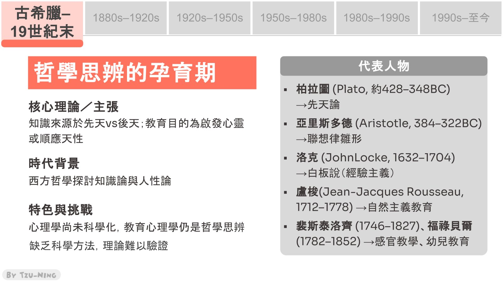
科學心理學誕生與探索（1880 年代至 1920 年代）
- 馮特（Wundt）於 1879 年在德國萊比錫大學設立第一間心理學實驗室，奠定心理學作為科學的基礎。
- 詹姆士（William James）將心理學原理引入教育實踐。
- 桑代克（Thorndike）於 1903 年出版《教育心理學》，將教育心理學確立為獨立的科學學科，被稱為「教育心理學之父」。
- 比奈（Binet）建立智力量表，開啟教育測驗的發展。
這個時期的背景是科學方法興起，以及工業革命後教育的普及，教育研究因此走向實證與標準化測量。其限制在於過於強調可測量的外顯表現，忽略了學習的內在歷程。
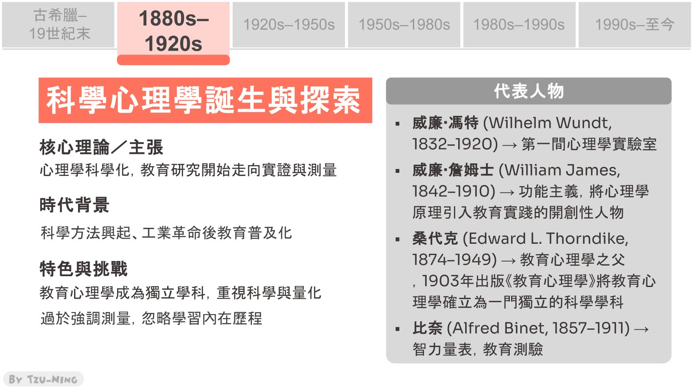
行為主義時期（1920 年代至 1950 年代）
代表人物為巴夫洛夫、華生與史金納。行為主義認為行為是刺激與反應的連結，並可透過增強加以塑造：當行為之後出現個體喜歡的結果，該行為再次出現的可能性就會提高。例如，學生發言後獲得加分，若學生重視加分，下次發言的可能性便會提高。
這個時期的美國心理學具有「去心智化」的傾向，工業化社會講求效率與結果，教育目標因此明確化、教學策略系統化。其限制在於只關注外顯行為，忽視內在心智歷程與學習者的主動性。
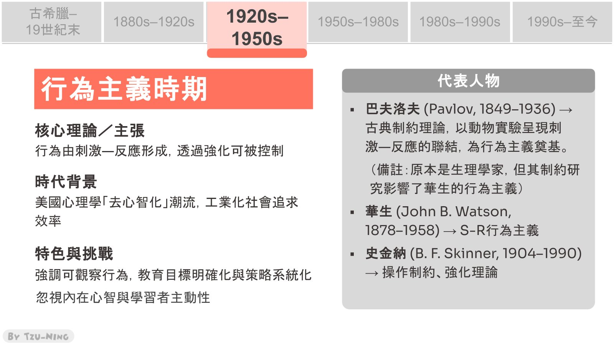
認知革命與人本主義（1950 年代至 1980 年代）
為回應行為主義的限制，認知革命主張打開心智的「黑盒子」，探討學習者內在的思考歷程。代表人物包括皮亞傑、布魯納與奧蘇貝爾；人本取向的代表人物則為馬斯洛與羅傑斯。此時期認為學習是認知歷程，學習者會主動建構知識，同時關注動機與情感需求。
時代背景為二次大戰後電腦科學的興起。心理學家將人腦類比為電腦，提出訊息處理理論，以輸入、處理與輸出描述學習歷程。此時期的限制在於理論偏重理想型的學習者，對多元學習者與不同學習情境的關注不足。
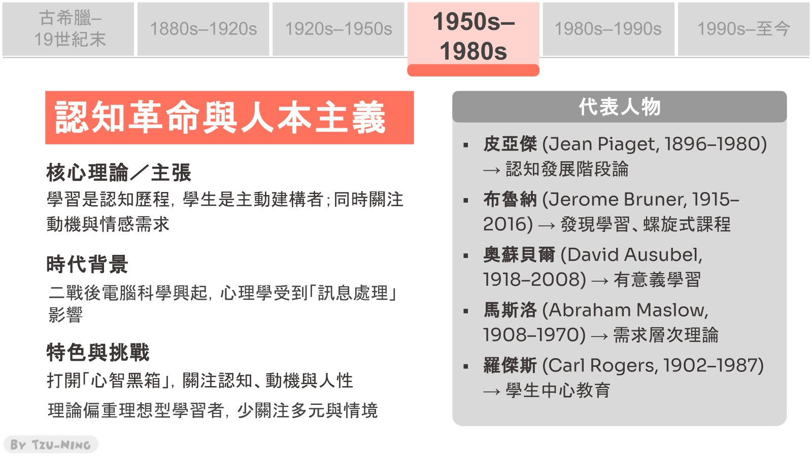
建構主義與社會文化觀點（1980 年代至 1990 年代）
前一時期聚焦於個人，此時期則強調環境、社會文化與人際互動對學習的影響。代表人物包括提出社會文化理論的維高斯基、提出社會學習理論的班杜拉（個體可透過觀察與模仿學習），以及研究情境學習與問題導向學習（PBL）的建構主義學者。
此時期主張知識是學習者在情境與社會互動中主動建構的，因此重視合作學習、探究學習、情境式教學與 PBL。其限制在於：學生程度落差大時，探究學習不易進行；合作學習可能衍生人際問題；且實踐成本高、對教師專業要求高，難以大規模推行。
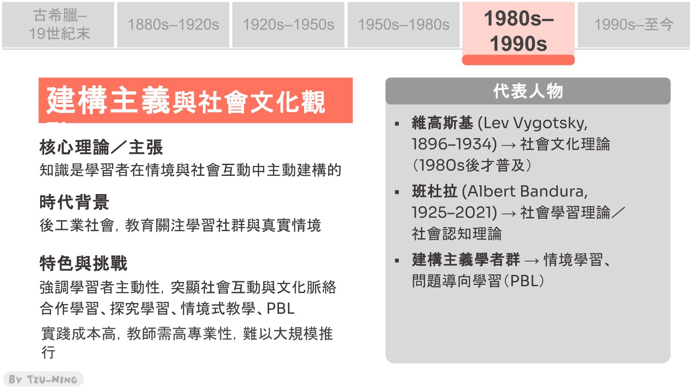
當代多元與科技取向（1990 年代至今）
代表人物包括提出多元智能理論的加德納、推廣情緒智力的高曼、研究自我調整學習的齊默曼，以及教育神經科學與 AI 學習分析領域的學者。此時期的特色是學習的多元化，重視情緒、動機與自我調控，並整合科技與腦科學，在全球化與數位化的背景下關注個別差異與多元文化。
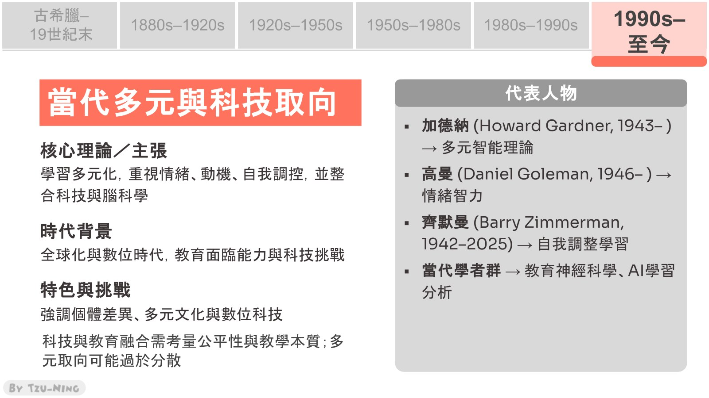
綜觀六個時期：科學心理學建立後，行為主義著重結果與效率；認知革命與人本主義進一步探討內在心智；建構主義與社會文化觀點將學習放回社會脈絡；當代則走向多元並整合科技。
優質教學的幾個概念
關於優質教學，本週聚焦於以下三點。
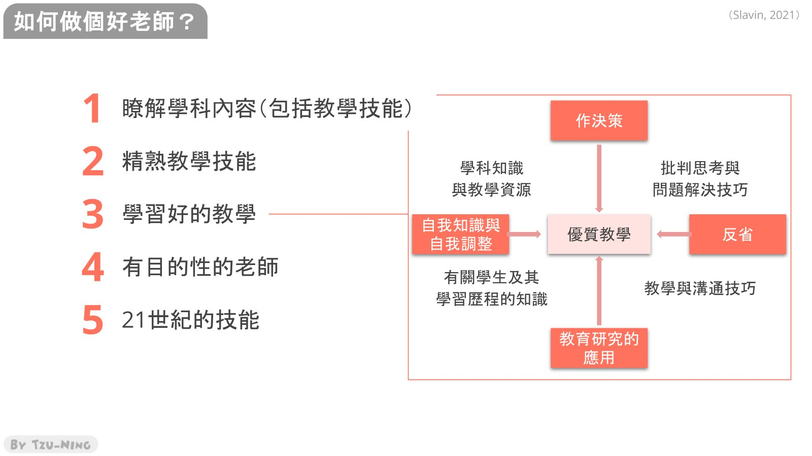
學科知識與教學技能兼備
具備豐富的學科知識不等於能有效教學，教學表達流暢也不代表內容充實。瞭解學科內容與精熟教學技能兩者兼備，才能構成優質的教學。
有目的性的教學
有目的性（intentionality）是指教師的教學行動具有明確方向與理由。以老師自身的實習教學為例：若以學生參與熱絡、課堂氣氛愉快作為教學成效的指標，容易忽略更根本的問題，也就是學生究竟學到了什麼，以及是否達成教學目標。課堂熱絡不等於學生學會，設計教學活動前，應先確立學習目標。
教師效能感
教師效能感（teacher efficacy）是指教師相信自身努力能促成學生學習與成功的程度，是「自我效能感」在教師角色上的應用。教師效能感偏低時，教師容易產生「做什麼都沒有用」的無力感，這不僅影響學生學習，也影響教師的心理健康。
教學只是常識嗎？三個常見迷思
教育心理學研究的價值之一，在於檢驗看似合理的常識。以下三個問題，常識性的回答與研究結果並不一致。
迷思一：依學生偏好的學習風格教學，學習效果最好
多數研究顯示，學生以自己偏好的學習風格（如視覺型、聽覺型）學習，並不會因此學得更多；偏好不等於成效。然而，仍有 93% 的一般大眾與 76% 的教育工作者相信這項說法（Macdonald et al., 2017）。
這項迷思源自兩個各自成立的事實：一是人們確實有偏好的訊息接收方式；二是教師以多種感官模式呈現訊息，確實有較佳的教學成效。兩者結合後，被誤推為「依偏好風格教學效果最好」，但研究並不支持此結論。
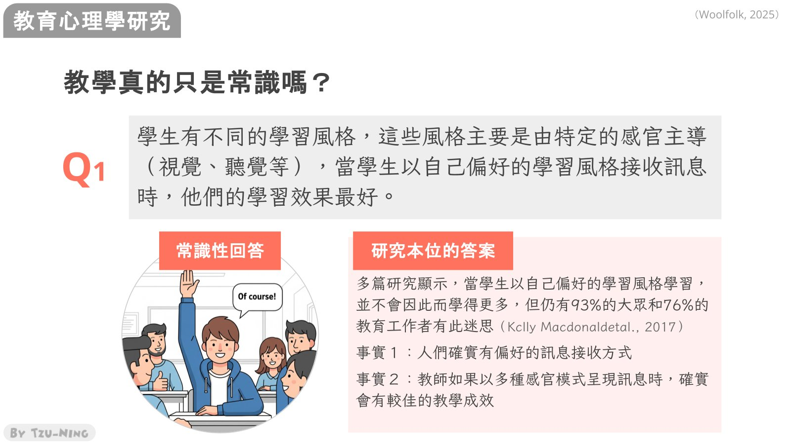
迷思二：資優學生不應跳級或提早進入大學
常見的顧慮是跳級可能造成人際與生活適應上的困難。研究結果則傾向支持適度的加速學習：在小學或中學跳級的數學資優生，較可能取得更高學位，並發表廣泛被引用的論文（Park et al., 2013）；對部分資優學生而言，快速學習教材並與能力相當的同儕一同學習，是正向的經驗（Kretschmann et al., 2014）。
解讀這類研究時，仍需留意樣本規模，以及研究如何界定「成功」。取得高學位或發表論文未必是每個人的人生目標，因此研究結論多以保留的語氣呈現。
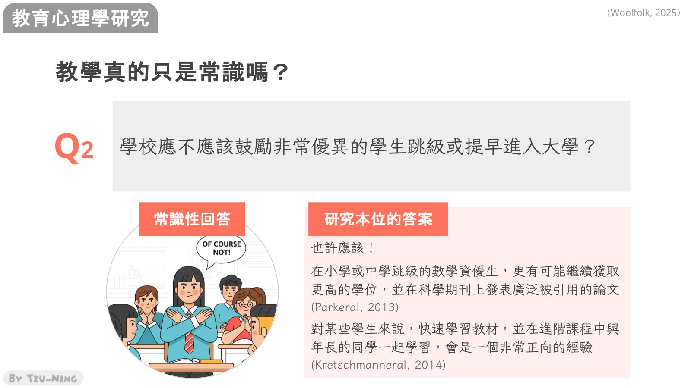
迷思三：給學生更多選擇，就能促進學習
給予學生選擇確實可能提升學習動機，但未必能提升學習成效。例如，能力較低的學生自行選擇學習任務時，傾向重複練習已經熟悉的內容，而非挑戰更難的作業。研究指出，有引導的選擇與教師適度的控制，在某些情況下較有幫助（Kicken et al., 2009）。
這與維高斯基的近側發展區概念相呼應：教師應安排略高於學生現有能力、在協助下能夠完成的任務，學生才有機會進一步成長。
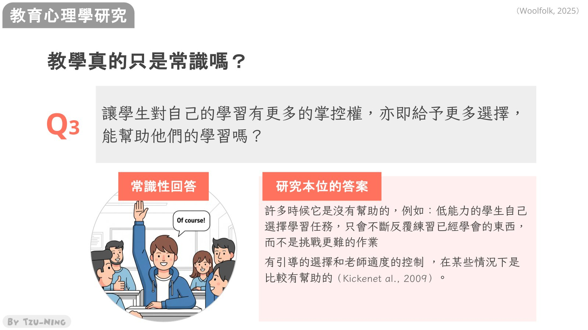
三個例子說明，許多看似理所當然的教學觀念，未必經得起研究檢驗。以下介紹教育心理學常用的研究方法。
實驗法：實驗室實驗與隨機化實地實驗
實驗法的核心原則是只操弄研究者關注的變項，其他條件保持一致，以檢驗該變項的影響。
實驗室實驗在高度控制的情境中進行。例如，讓兩組大學生閱讀知識內容相同的科學文章，一組結構清楚、一組刻意寫得零散，再以眼動儀比較其閱讀歷程；除文章結構外，指導語與施測程序都須一致。由於控制嚴謹，實驗室實驗的內在效度高，在建立與考驗理論上十分重要。
教學法等研究則須在學校的真實情境中進行，例如比較直接教學法與合作學習的成效，稱為實地實驗；若能將學生隨機分派至不同組別，即為隨機化實地實驗。其控制程度不如實驗室，但外在效度佳，適合評估實際課程或改善方案的效果。
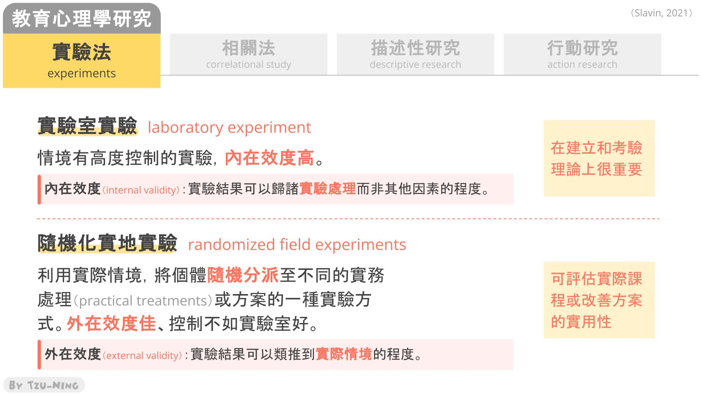
個案實驗：ABAB 設計
個案實驗（single-case experiment）又稱單一受試實驗，常以 ABAB 設計進行。課堂介紹的研究記錄數學課中學生「離座」與「未經允許發言」兩種違規行為的時段百分比：
- A（基準線）：未介入時的違規比例。
- B（介入）：導入遊戲後，違規比例明顯下降。
- A（撤除）：移除遊戲後，違規比例回升。
- B（再介入）：再次導入遊戲，違規比例再度下降。
若研究只進行 A 與 B 兩個階段，便無法排除其他可能的解釋，例如同一時間更換了任課教師。透過撤除與再介入，介入出現時行為改善、撤除時行為回復的模式反覆出現，有助於建立因果關係。該研究在閱讀課中也觀察到相同的趨勢。
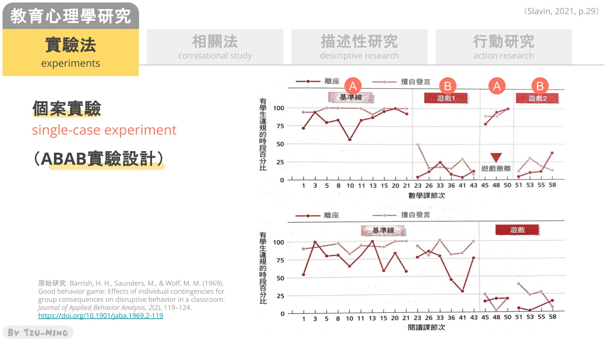
實驗研究與準實驗研究
實驗研究與準實驗研究的差別在於參與者是否經過隨機分派。實驗研究的參與者隨機分派至各組；準實驗研究則以既有群體作為組別，例如以整個班級作為實驗組、另一班級作為控制組，因無法重新打散分派而屬準實驗設計。
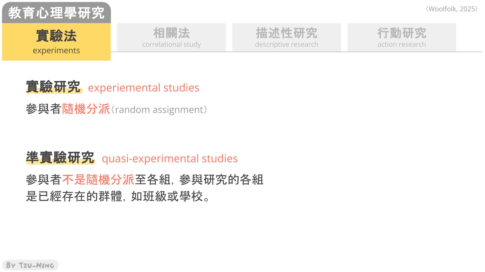
相關法：相關不等於因果
相關法的目的在於瞭解變項之間是否存在相關。相關係數的範圍介於 -1 到 1 之間，數值不可能超出此範圍。
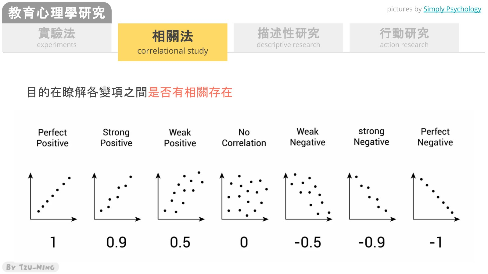
解讀相關研究時最常見的錯誤，是將相關誤解為因果。相關只能說明變項之間有關聯，無法證明因果關係。
例如，研究發現家中有草皮景觀的學生學業成就較高，但這不表示種植草皮能提升學業成就。較合理的解釋是存在第三個變項，即社經地位：家庭資源較充裕，既能負擔草皮景觀，也能提供較豐富的學習資源。
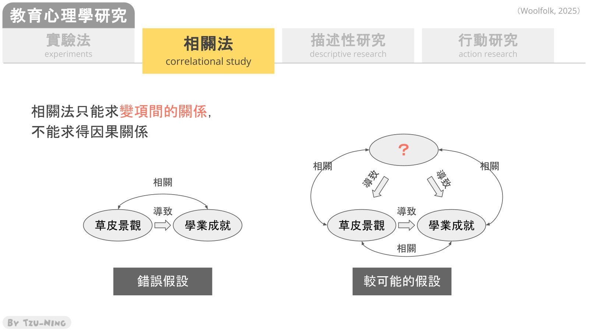
當 A 與 B 有相關時，邏輯上至少有以下五種可能：
| 可能 | 例子 |
|---|---|
| A 造成 B | 投入較多時間讀書，提高了考試成績。 |
| B 造成 A（因果倒置） | 健康狀況良好，使人有更多精力投入工作，而非工作時間長使人健康。 |
| C 造成 A 和 B（隱藏變因） | 氣溫升高，同時使冰淇淋與泳衣的銷售量增加。 |
| A 造成 B，但 C 也會造成 B（一果多因） | A 是 B 的原因之一，但另有其他因素也會造成 B。 |
| 純屬巧合 | 尼可拉斯・凱吉每年演出的電影數量，與美國游泳池溺斃人數高度相關，但兩者並無因果關係。 |
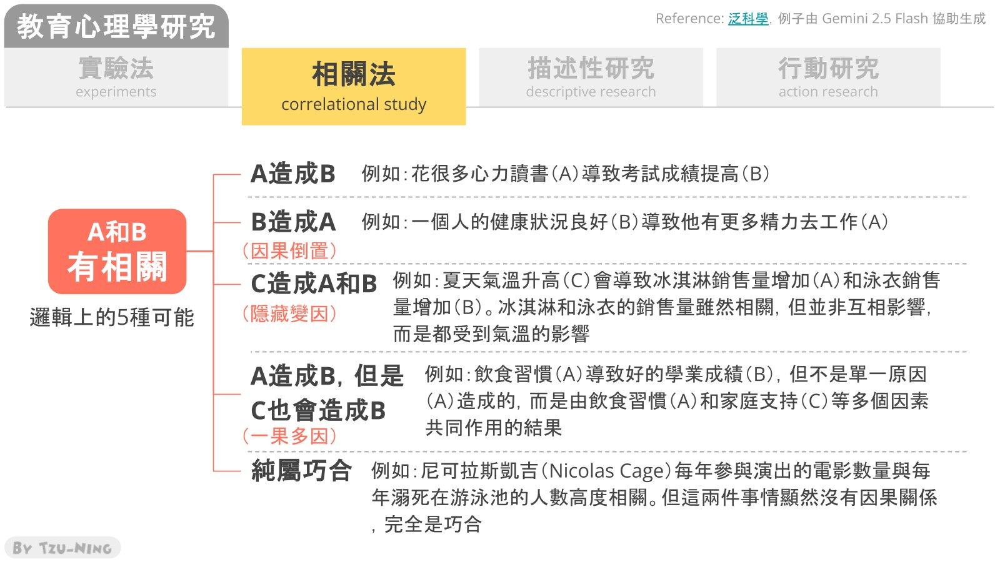
其餘兩種研究方法（描述性研究與行動研究）將於下次課程介紹，並討論不同研究問題適合採用的研究方法。
本週重點整理
- 教育心理學涵蓋發展理論、學習理論、教學理論／教學法、學習多樣性與教學實踐五大範疇。
- 教育心理學的發展分為六個時期，每一時期都在回應前一時期的不足。
- 桑代克被稱為「教育心理學之父」。
- 優質教學的幾個概念：學科知識與教學技能兼備、有目的性的教學、教師效能感。
- 學習風格、資優生跳級與給予選擇三個例子顯示，常識未必經得起研究檢驗。
- 實驗室實驗內在效度高，隨機化實地實驗外在效度佳；ABAB 設計有助於建立因果關係；實驗與準實驗研究的差別在於是否隨機分派。
- 相關係數介於 -1 到 1 之間；相關不等於因果。
資料來源
- 王孜𡩋，〈教育心理學概論〉課堂講授，2026 年 10 月 8 日。
- 王孜𡩋，〈教育心理學概論〉課堂投影片，國立臺灣師範大學教育心理與輔導學系。文中圖片皆取自此投影片。
- 文中引用的研究文獻依投影片標註：Barrish, Saunders, & Wolf (1969)；Kicken et al. (2009)；Kretschmann et al. (2014)；Macdonald et al. (2017)；Park et al. (2013)；Slavin (2021)；Woolfolk (2025)。